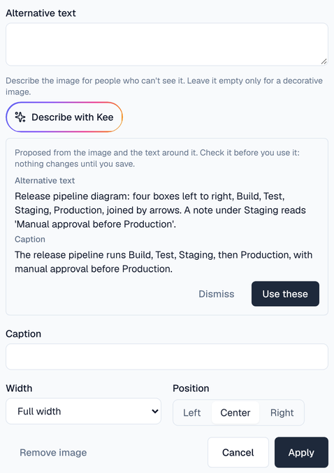
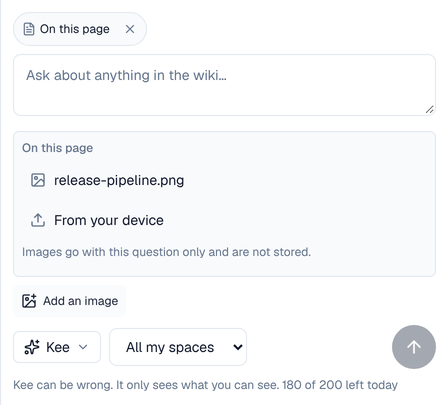
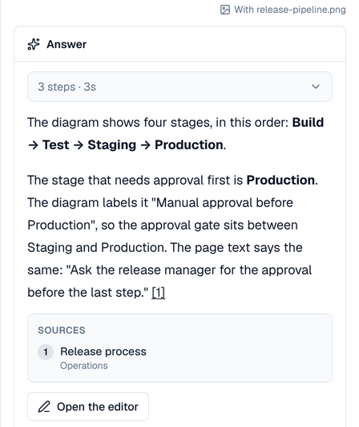

Kee can look at images: it proposes alternative text and a caption for an image in a page, and answers questions about images you add to Ask Kee. An image is sent to the model only when you ask, for that one request.
Both need the Images feature, which an administrator turns on (it is off by default), and a model that reads images. If the model can't, Kee says so instead of offering the button.
1. Describe an image
- In the editor, select the image and open Image settings.
- Under Alternative text, select Describe with Kee. Kee looks at the image and the text around it.
- Read the proposed Alternative text and Caption. Select Use these to fill them into the fields, or Dismiss.
- Change the text if you need to, then select Apply in the dialog. Publish the page as usual.

- Nothing changes until you select Use these, and nothing is saved until you apply the dialog and save the page.
- When the image looks decorative, Kee says so and proposes no alternative text.
- Kee never names the people in an image.
- You need to be able to edit the page. Page locks apply.
- If the model can't read images, the dialog says … can't look at images: ask your administrator for a model that does.
- Each description counts as one request against your daily limit.
2. Ask Kee about an image
- Open Ask Kee from the top bar, on the page with the image if it is in a page.
- Select Add an image. Pick one of the images under On this page, or From your device.
- Type your question and send it. The image goes with that question only.

- Up to four images a question: images attached to the page you opened Ask Kee on (read with your access), or one picture from your device (PNG, JPEG, GIF or WebP, up to 5 MB).
- Images are never stored. Your question keeps only their names (With … under it), and follow-up questions don't send them again.
- When the chosen model can't read images, the panel says so and you can't send. With an agent that always uses its own model, the server decides.
- The image is made smaller and its hidden details (camera, place, time) are removed before it is sent.
- Asking with images counts like any question.

3. Spreadsheets attached to pages
Ask Kee also reads Excel workbooks (.xlsx) attached to pages, like PDF and Word files: every sheet, row by row. See What Kee can read.